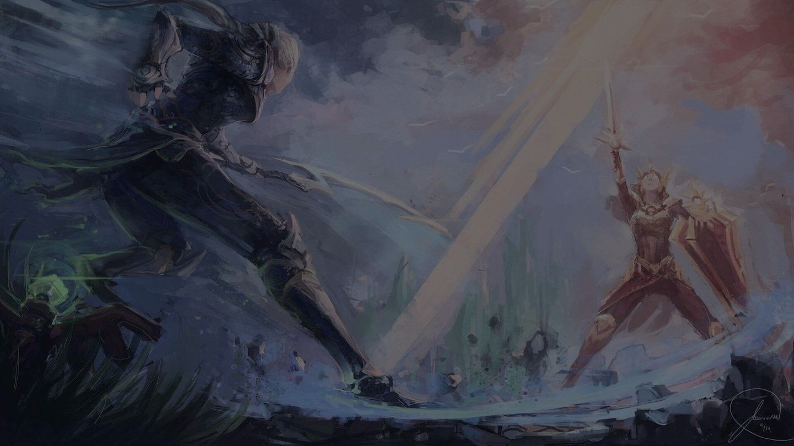

THE BEGINNING
Diana did not belong on Mount Targon. A group of Solari hunters discovered her swaddled between her frost-claimed parents—strangers to this land, who had clearly traveled a long way. The hunters brought her to their temple, dedicated her, and raised her as a member of the Tribes of the Last Sun, known to many as the Rakkor.
Like all of the Solari faith, she underwent rigorous physical and religious training. However, unlike others, Diana was determined to understand why the Solari act the way they do, and the reasoning behind their beliefs. She spent her evenings digging through the libraries, devouring texts with only pale moonlight to read by. Paradoxically, this pursuit provided more questions than answers, and her teachers’ aphoristic replies did little to sate her inquisitive mind.
When Diana began to notice tomes had whole chapters torn from them, and all references to the moon seemed missing, the teachers assigned harsh punishments, intending to exhaust her into devotion. Likewise, her fellow acolytes distanced themselves from her and her questioning.
There was one shining beacon in these years of confused, frustrated isolation: Leona. The most devout of Diana’s peers, they often found themselves in impassioned debate. Though one never swayed the other in their long and frequent conversations, they developed a close friendship.
Then, one glorious night, Diana discovered a hidden alcove deep within the mountain. Moonlight spilled against its walls, revealing imagery of the sun, of soldiers armored in gold alongside silver-clad warriors, and matching imagery of the moon, atop Targon’s greatest peek. Delighted, Diana raced to share this clear message with Leona—the sun and moon were not enemies after all!
Leona did not react with joy.
She urged Diana to put this heresy from her mind entirely, warning of the punishments that may befall her if she were to voice such thoughts to others. Diana had never seen her serious friend quite so grave.
Frustration gnawed at her. She had reached the end of the Solari’s knowledge, yet not even Leona would take this new discovery into account. What were the Solari hiding? Increasingly, Diana felt certain there was only one place she could go for answers: the top of Mount Targon.
The climb tested her in every way imaginable, and time seemed to stand still as she scaled the peak. To survive, she focused her thoughts on her lone companion, and the answers that would make the Solari better, more whole.
The summit greeted her with the brightest, fullest moon she’d ever seen. After a rapturous moment, a pillar of moonlight slammed into her and she felt a presence taking hold of her, sharing glimpses of the past, and of another Rakkor faith called the Lunari. Diana realized this presence could only be one of the legendary Aspects… and she had been chosen as its host.
When the light dissipated, her mind was again her own. Diana found herself clad in armor, holding a crescent blade, and hair once dark hair now gleaming silver. She turned to find she was not alone—Leona stood at her side, similarly bedecked in shining, golden battleplate, a sunbreak-bright shield and sword in her hands.Diana was overjoyed to share in this revelatory moment with her friend, but Leona thought only of returning to the Solari. Diana begged her not to, desperate that they face this new future together. But Leona refused, and their disagreement quickly turned into a titanic battle, erupting with moonlight and sunfire.
Fearful of losing herself to the Aspect’s power, Diana ultimately fled down the mountain. But, vindicated in her search, she felt more certain than ever that she had been right to question the Solari’s teachings. It was time to confront them, and show the error of their ways.Pushing past their Ra’Horak guardians, Diana burst into the chambers of the high priests. They listened with mounting horror as she told of what she had learned of the Lunari… and then they denounced her as a heretic, a blasphemer, and a peddler of false gods. Rage filled Diana, amplified by the Aspect within, and she embraced it in a terrible burst of moonlight. Startled, she fled the temple, leaving a trail of death in her wake. Now, driven by half-remembered visions and glimpses of ancient knowledge, Diana clings to the only truths she knows for certain—that the Lunari and the Solari need not be foes, and that there is a greater purpose for her than to be a Solari acolyte of Mount Targon. And though that destiny remains unclear, Diana will seek it out. 
DIANA
The moon is rising
SKILLS
P
Q
W
E
R